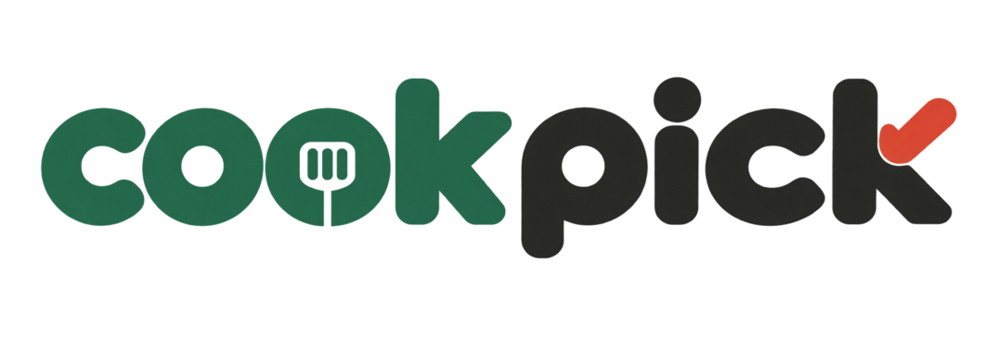
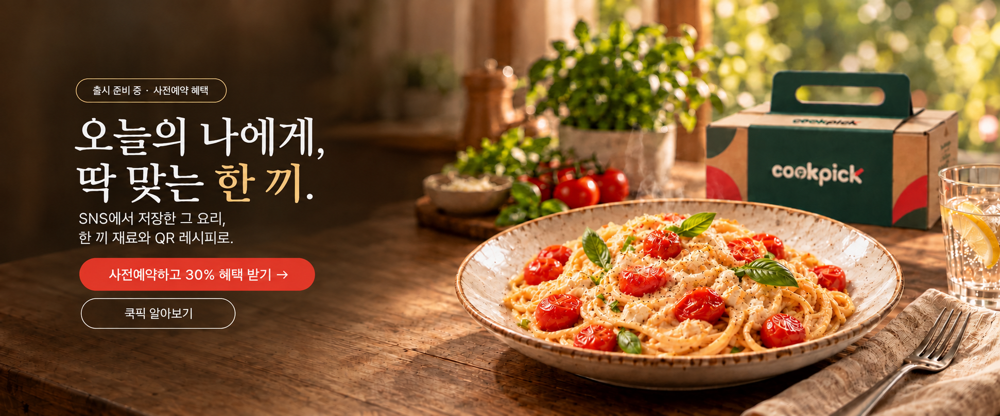
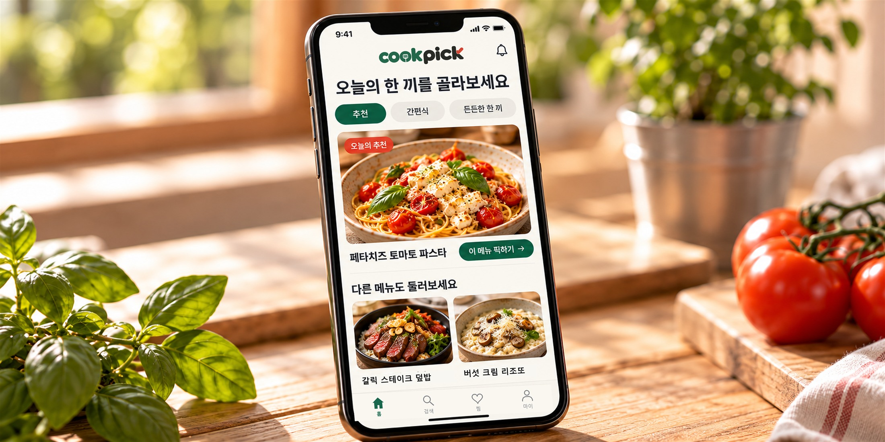
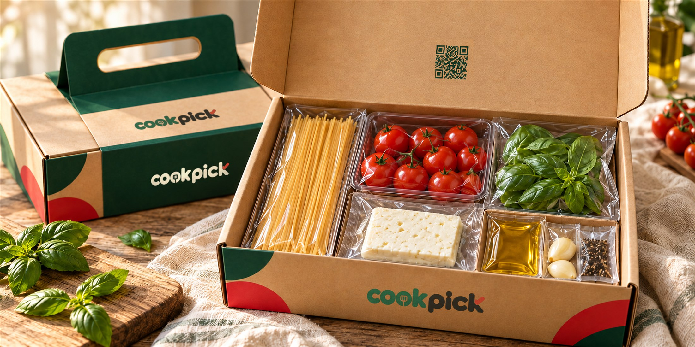
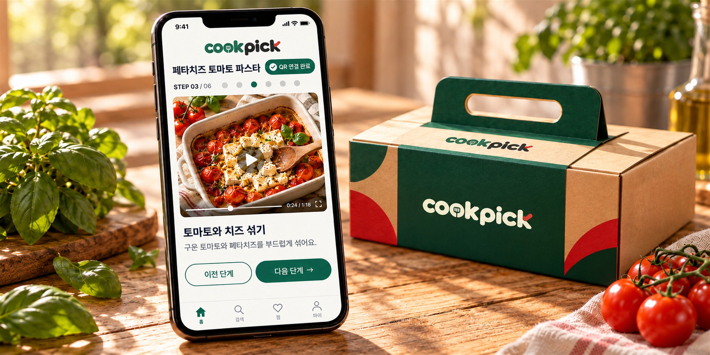

한 번 쓰고 남는 재료
요리하고 남은 재료는
늘 냉장고 속에.

사전예약
THE QUESTION
요리하고 남은 재료는
늘 냉장고 속에.
SNS에서 봤던 레시피를
또 찾아야 하고.
먹고 싶은데,
장보는 게 더 일이에요.

01 · PICK IT
먹고 싶은 메뉴를 쿡픽에서 골라보세요.

02 · GET IT
메뉴에 맞춘 재료와 소스를 함께 준비해요.

03 · COOK IT
패키지 QR을 찍고, 조리 순서를 한 단계씩 따라가세요.
다양한 메뉴 중
오늘의 한 끼를 골라요.
메뉴에 맞춘 신선한 재료와
소스를 한 번에.
QR을 찍고
조리 순서를 따라가요.
오픈 후 7일간
특별한 혜택을 만나보세요.
먹고 싶은 메뉴를 선택하세요.
메뉴에 맞춘 재료와 소스를 준비해요.
패키지의 QR을 찍고 조리 순서를 따라해요.
맛있는 한 끼, 여유로운 저녁을 즐겨요.
PRE-REGISTER
오픈 소식과 첫 한 끼 혜택을 먼저 만나보세요.
실제 결제는 없으며, 입력값은 저장되지 않습니다.